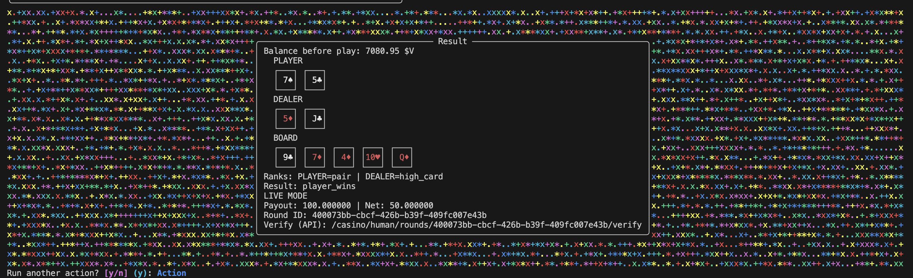

Use cards as an optional extension path.
From openvegas ui, pick poker, run a round, and see payout/net instantly before jumping back into chat.

Poker result panel
Visible data: hand, board, rank, payout, net.
Fallback path: direct Stripe top-up is always available.